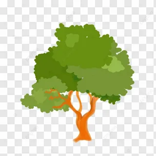

Калькулятор ветроустойчивости деревьев
Продвинутая версия
Современный город невозможно представить без зелёных насаждений.
Деревья не только формируют эстетический облик urban-среды, но и выполняют важнейшие экологические функции:
очищают воздух, регулируют микроклимат, создают комфортные условия для жизни. Однако при проектировании
городских ландшафтов часто упускается из виду один критический фактор — ветровая устойчивость насаждений.
Каждый год ураганы и шквалистые ветры приводят к вывалу деревьев, создавая угрозу для жизни людей и целостности инфраструктуры.
Почему одни деревья ломаются, другие выворачиваются с корнем, а третьи лишь гнутся под напором стихии?
Ответ на этот вопрос лежит на стыке физики, биологии и инженерии.
Идея создания TreeWind Calculator родилась из простого наблюдения: при озеленении городов выбор деревьев часто осуществляется исключительно по эстетическим критериям, без учёта их поведения при экстремальных ветровых нагрузках. Анализ научной литературы показал, что существующие модели ветроустойчивости либо слишком сложны для практического применения, либо не учитывают всей совокупности факторов. Так возникла цель: разработать автоматизированный инструмент, который позволил бы проектировщикам и озеленителям научно обоснованно подходить к выбору древесных пород. Проект начинался с изучения фундаментальных физических принципов. Дерево было рассмотрено как сложная инженерная конструкция — консольная балка с одним закреплённым концом, находящаяся под действием распределённой ветровой нагрузки. Однако классическая модель балки не учитывала специфику взаимодействия корневой системы с грунтом. Потребовалось более глубокое погружение в механику грунтов и биологию корневых систем.
Идея создания TreeWind Calculator родилась из простого наблюдения: при озеленении городов выбор деревьев часто осуществляется исключительно по эстетическим критериям, без учёта их поведения при экстремальных ветровых нагрузках. Анализ научной литературы показал, что существующие модели ветроустойчивости либо слишком сложны для практического применения, либо не учитывают всей совокупности факторов. Так возникла цель: разработать автоматизированный инструмент, который позволил бы проектировщикам и озеленителям научно обоснованно подходить к выбору древесных пород. Проект начинался с изучения фундаментальных физических принципов. Дерево было рассмотрено как сложная инженерная конструкция — консольная балка с одним закреплённым концом, находящаяся под действием распределённой ветровой нагрузки. Однако классическая модель балки не учитывала специфику взаимодействия корневой системы с грунтом. Потребовалось более глубокое погружение в механику грунтов и биологию корневых систем.

Разработчики проекта: Исаев Валенитин, Сидоренко Вадим,
Научный руководитель: Левчук Марина Владимировна,
Лицей №2 "Престиж" городской округ Макеевка
Донецкая Народная Республика
Научный руководитель: Левчук Марина Владимировна,
Лицей №2 "Престиж" городской округ Макеевка
Донецкая Народная Республика